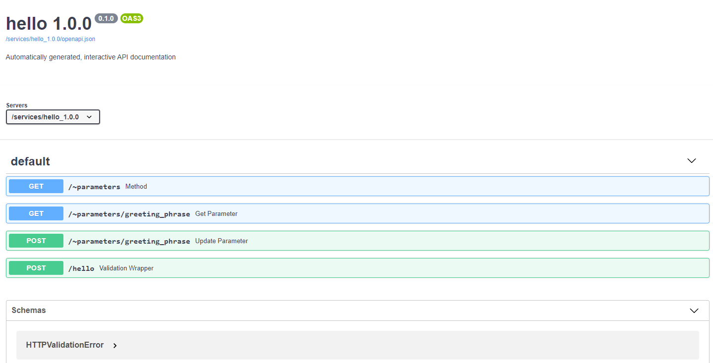

API Autodocs
Daeploy automatically creates interactive documentation for every service created using the Software Development Kit. It can be found at http://your-host/services/servicename_version/docs.
Assume we have deployed the init service as hello 1.0.0, then the docs would
be reachable at http://your-host/services/hello_1.0.0/docs and look like:
(click image to enlarge)
{kind=link}
Interacting with the Docs
Each endpoint function in the documentation can be clicked to get more information
about the data it expects and an example of a successful response and more. Let’s try
the hello/ function. Try it once with your name and once with “World”. With your
name it should return “Hello <name>” and for “World” you should get “Greeting failed”.
We expect to have gotten a notification, because in the code we wanted to raise a notification if a user tried to greet the world, because of time constraints. So head over to http://your-host/dashboard/ and click the notifications tab. And we will see the notification there.